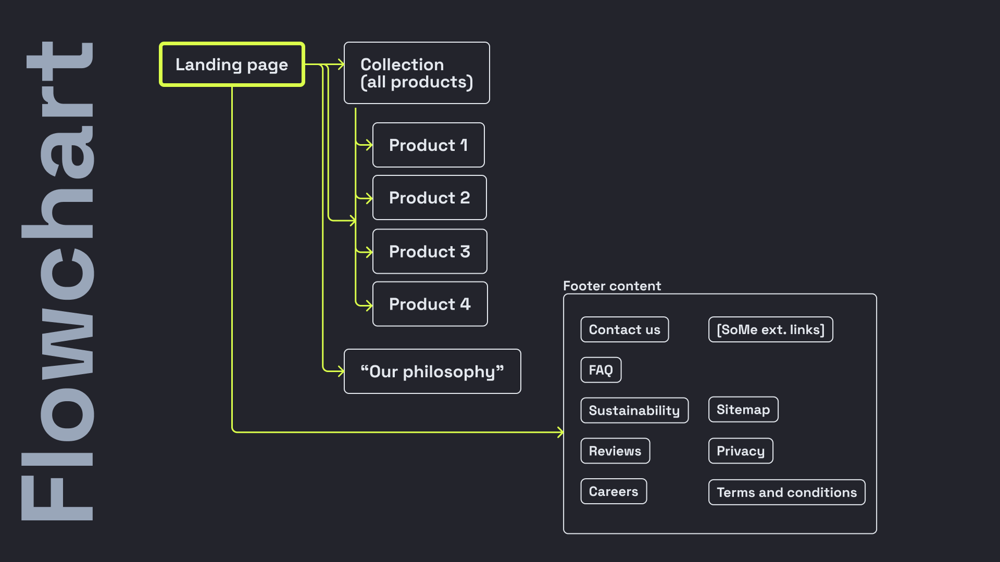

<!DOCTYPE html>
<html lang="sv">
  <head>
    <meta charset="UTF-8" />
    <meta name="viewport" content="width=device-width, initial-scale=1.0" />
    <title>Kirres Portfolio</title>
    <link rel="stylesheet" href="Case1.css" />
    <link rel="preconnect" href="https://fonts.googleapis.com" />
    <link rel="preconnect" href="https://fonts.gstatic.com" crossorigin />
    <link
      href="https://fonts.googleapis.com/css2?family=Anek+Bangla:wght@300;500&display=swap"
      rel="stylesheet"
    />
  </head>
</html>
<body>
  <div class="header-wrapper">
    <div class="header">
      <h1 class="titel">KIRRE</h1>
      <div class="text-right">
        <a href="index.html">Hem</a>
        <h2>Case 1</h2>
        <h2>Case 2</h2>
        <h2>Case 3</h2>
      </div>
    </div>
  </div>

  <div class="incase2-wrapper">
    <div class="incase2-page">
      <div class="incase2-img">
        
      </div>
      <div class="incase2-text">
        <div class="incase2-titel">
          Omg, kolla på hur den ser <span class="incase2-titel-span"> ut!</span>
        </div>
        <div class="incase2-p">
          Den här hemsidan är så himla cool, WOW! Jag och min klasskompanjon har
          jobbat med denna tilsammans. Jag är stolt. Heja mig! Kul att du ville
          kika in, hejdååååååååååååååååå!
        </div>
      </div>
    </div>
  </div>

  <div class="aboutprotech-page">
    <div class="aboutprotech-titel">
      The<span class="aboutprotech-titel-span"> Process.</span>
    </div>
    <div class="aboutprotech-img-wrapper">
      <div class="aboutprotech-img-text">
        <div class="aboutprotech-img">
          
        </div>
        <div class="aboutprotech-imgtext">
          <h2>Persona</h2>
          <p>
            A persona is a fictional character representing the characteristics
            and needs of a specific user group. It helps teams understand and
            empathize with their target audience, guiding the development of
            products or services to better meet user expectations.
          </p>
        </div>
      </div>
      <div class="aboutprotech-img-text">
        <div class="aboutprotech-img">
          
        </div>
        <div class="aboutprotech-imgtext">
          <h2>Flowchart</h2>
          <p>
            A flowchart is a visual tool that uses shapes and arrows to depict
            the steps or decisions in a process. It simplifies complex
            information, aiding in the understanding, communication, and
            improvement of workflows.
          </p>
        </div>
      </div>
    </div>
  </div>
</body>
